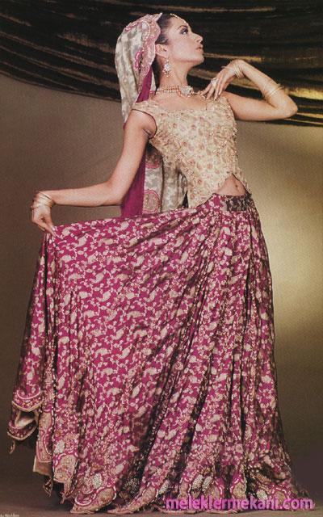

Turistler açısından Hindistan’ı cazip kılan özelliklerden biri de halkın çok renkli ve
çok farklı kıyafetidir. İpek sariler, parlak çoliler, renkli lehangalar ve geleneksel şalvar-kamiz yüzyıllar boyunca birçok gezgini büyülemiştir. Sari, bir tek kumaş olarak mevcut kıyafetler içinde en çok yönlü olanıdır. Kadınlar tarafından giyilen birçok geleneksel kıyafetten biridir ancak her nasılsa Hint kadının milli kıyafeti haline gelmiştir. Sari, dikdörtgen şeklinde yaklaşık 3,5 x 4,5 metre boyutlarında bir kumaştır. Bu kumaşın stili, rengi ve dokusu değişkenlik gösterir ve keten ve ipek gibi çeşitli insan yapımı maddeden imal edilir. Herhangi bir ölçüye göre dikilmeyen sarinin eskimeyen bir güzelliği vardır. Her ölçüye uygundur. Çeşitli şekillerde giyilebilen bu harika kıyafet ayrıca giyiliş şekli, rengi ve dokusuyla giyen kişinin sosyal statüsü, mesleği, bölgesi ve dini hakkında bilgi verir. Sarinin altına giyilen dar ve kısa bluzun adı cholidir. Choli bir kıyafet olarak milattan önce 10. Yüzyılda ortaya çıkmıştır ve ilk önceleri sadece vücudun ön kısmını örterdi. Rajasthan eyaletinde bu tip choliler hala yaygındır. Hindistan kadınlarının kullandığı diğer bir kıyafet şalvar-kamizdir. Keşmir ve Pencab’da kullanılmaya başlayan bu rahat ve saygın kadın kıyafeti şimdilerde Hindistan’ın tüm bölgelerinde yaygındır. Şalvar pijamaya benzeyen bir pantalondur ve belden ve bileklerden sıkıca içeri çekilir. Kadınlar şalvarın üzerine kamiz adı verilen uzun ve bol bir ceket giyerler. Bazen şalvar yerine churidar giyen kadınlara da rastlanabilir. Bunun üzerine, kurta adı verilen yakası da olabilen bir ceket giyilebilir.

Hint kadınlarının çoğunluğu geleneksel kıyafetler giyiyorlarsa da, erkekler daha modern batı kıyafetleri içindedir. Gömlek ve pantolon tüm Hindistan’da giyilmektedir. Ancak köy erkekleri kendilerini kurta, lungi, dhoti ve pijama gibi geleneksel kıyafetler içinde daha rahat hissederler. Güneyde ortaya çıkan lungi bugün hem erkekler hem de kadınlar tarafından giyilmektedir. Bele giyilen küçük uzunlukta bir kumaştır. Dhoti, lunginin uzunudur. Lenga ise köylülerin giydiği pijamaya benzer bir pantolondur. Hint kıyafet şekilleri dini ve bölgesel bir çok farklılık gösterir ve Hintlilerin giymiş olduğu kıyafetlerde bir renk, doku ve stil zenginliği göze çarpar.